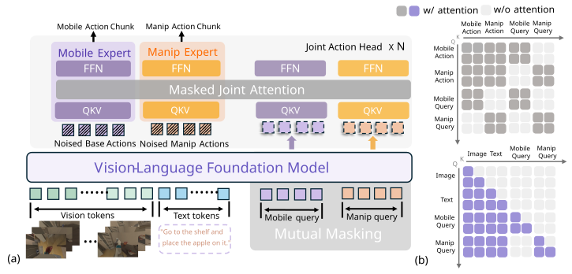
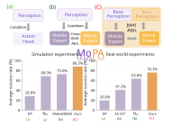
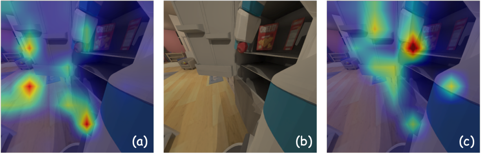

100
75
50
25
0
- DP3 21.6%
- ACT 23.6%
- DP 28.8%
- RDT-1B 42.9%
- AC-DiT 55.6%
- π0 59.1%
- AnchorVLA 64.0%
- MobileWAM 73.0%
- GeoHAT 79.3%
- InCoM 83.8%
- MoPA 88.3%
1 2





@misc{mopa,
title = {{MoPA}: Subsystem-Aligned Perceptual Streams for
Coordinated Mobile Manipulation},
note = {Manuscript}
}